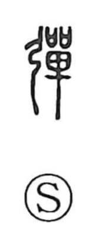

Explanation
A phono-semantic character, originally written 彈 with 單 serving as the sound element (tan). Early oracle-bone forms depict a bow with a pellet set on the taut string, capturing the act of snapping a shot; the Shuowen glosses it as “sending off a bullet.” From this vivid image come senses such as to flick or repel, to shoot, and the noun bullet—hence phrases like “string-bullet.” In ancient rites, twanging the bowstring was performed to drive away evil, and the bow and arrow, revered as sacred implements, were believed to possess magical efficacy. This ritual background nourished further meanings like to exorcise, to attack, and to set right or correct. By extension to music, the idea of plucking a string yields the sense to play a stringed instrument, as seen in expressions like 弾琴 and 弾弦.